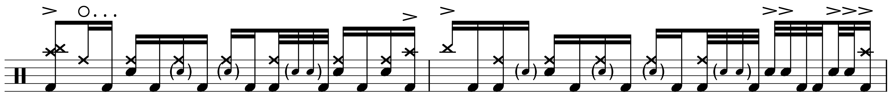
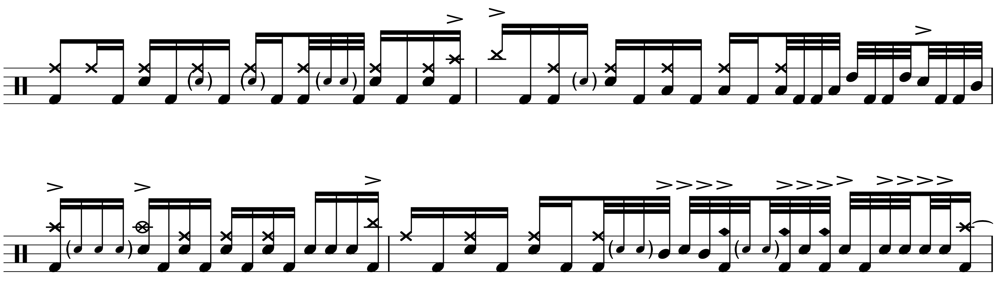

Transcription: “Salt of the Earth” — Alex Rüdinger with Good Tiger
Posted on April 11, 2021

Alrighty, time for something a bit more interesting. I found this band about three years ago, when Apple Music recommended them to me. They had just released an album, and this track “Salt of the Earth” was chosen for a new music playlist. It caught my attention right away when it came on. While the band wasn’t familiar, I recognized the drummer Alex Rüdinger after I looked into the group. Alex has played music with a whole slew of bands, most of it being rather intense metal. Not usually my cup of tea, so I wasn’t very familiar with Alex’s playing at this point.
Here’s the thing, I’m not sure what kind of metal Good Tiger is. On this album at least, some of their tunes sound more like hardcore with a dash of pop–punk. Whatever — what’s more important is that there’s some very interesting drumming going on.
Like pretty much every drummer these days, Alex has a playalong video for this tune:
He eventually made a video for every track on the album before announcing that he would dipping out of Good Tiger. Again, another hip thing for metal drummers to do. The video helped me break down a lot of the licks on this number, but it’s not quite an exact recreation of the album version. What I eventually put to paper is the drumming that’s on the record. The video is very close though, which tells me that much of the playing was planned out rather than ad–libbed, and I think that’s always they way to go in the studio.
You can see in the video that Alex has a 14 inch floor tom to his left, which leads to some very unique orchestrations. The video also makes clear that Alex often switches to open–handed playing on the fly (that is, keeping time on a cymbal with your left hand, when you’re a righty).
We can see prominent use of ghost notes throughout the grooves, specifically in the form drags and ruffs, as well as this lick that uses inverted paradiddle sticking (RLLR):
Also notice in the above example how ghost notes are frequently played in unison with the hi hat cymbal, which isn’t an approach I see/hear very frequently — more often, ghost notes find themselves in between cymbal notes.
Alex saves the double kick for the fills. He seems to be big on quad fills (RLKK), which are often used and perhaps even abused amongst drummers. He does spice things up a bit with an inverted orchestration where then kick drum notes are pushed over a 32nd note. Also check out this sleek 32nd note fill that features the ride bell:
Overall, Alex’s playing is very fluid and dynamic, and reminds me a bit of Keith Moon, where the patterns are frequently changed to fit the contour of the song. The whole album is full of the same style, and with the drums mixed front and center, it’s good fun to listen to (even if the music is not terribly remarkable overall). The drums also sound amazing; the album was tracked in England at a place called Middle Farm Studios, which looks like some sort of repurposed ranch. I’m not sure where the above video was done, but Alex says it’s all the same setup as the LP. I really dig the tom sounds — Alex uses Evans nowadays, but in the video it looks like his toms just have a bit of Moongel and gaff tape on what I’m guessing are Remo Emperors. The pros make it look so easy…
“Salt of the Earth” on Songwhip.
Tags: 2021 • Transcription • Alex Rüdinger • Good Tiger